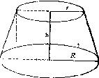

这个问题可用各种方法求解。例如，我们可能知道整个圆锥的侧面积的公式。
由于圆台是从圆锥切去一个较小的圆锥而得到的，所以它的侧面积是两个圆锥
侧面积之差；于是剩下要做就是把它用 R ，r，h来表示。把这个思路付诸实现，
我们最后就得到公式
S= π (R+r) ( R − r ) 2 h 2
在用这种或那种方法求得这结果以后，经过较长的演算后，我们可能希望有一
个更为清楚并且较少迂迥的论证。你能用不同方式导出这结果吗?你能一下子看
出它吗?
为了能直观地看出整个结果，我们可以从尝试看出其各个部分的几何意义
开始。这样，我们可能看出
) 2 2
( R − r h
是斜高的长度(圆锥可看作是由一个等腰梯形绕平行两边中点连线旋转而成的，
斜高是该等腰梯形的腰；见图12)。此外，我们还可能发现
π (R+r)=(2 π R+2 πr)/2
是圆台两底周长的算术平均值。注意公式的这同一部分也可改写为
π (R+r)=2 π(R+r)/2
这就是圆台的中截面之周长(这里，我们称平行于圆台上底和下底并等分其高的
平面与圆台的交为中截面)。
在找到各部分的新解释以后，我们现在可以从不同角度来看整个公式。于
是，我们可以这样读它：
侧面积= 中截面周长×\u26012X高
这里，我们可能回忆坦梯形面积的公式
面积= 中线×\u39640X
图12
(此中线平行于梯形的两个平行边并等分其高)。只要直观地看到圆台侧面
积和梯形面积这两种陈述间的类比关系，我们就可以“几乎一下子”看出圆台
的整个结果。这就是说，对于以上经过冗长计算所得到的结果，我们现在感到
非常接近于它的一个简短而直接的证明了。
(2)上面的例子是典型的。我们不完全满足于我们所导出的结果，而希望
去改进它，改变它。因此，我们研究这个结果，尝试去更好地理解它，尝试看
出它的某个新侧面。我们可能对于结果的某一小部分首先成功地观察出一个新
的解释。然后，我们可能相当幸运地发现观察其他部分的新方式。
一个接一个地，审查各个部分，尝试用各种方式去考虑它们，我们可能终